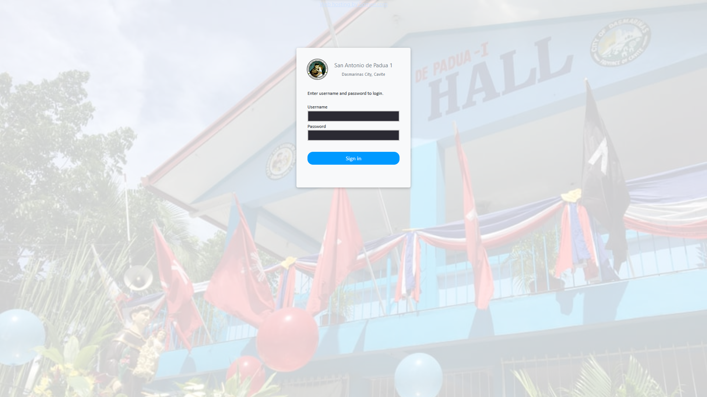
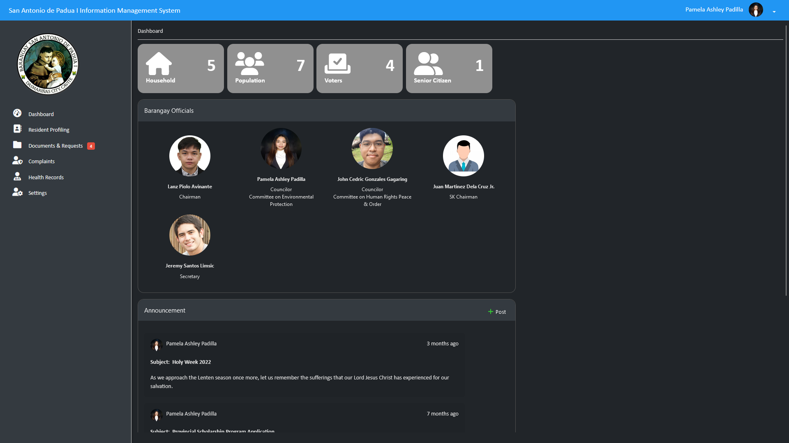
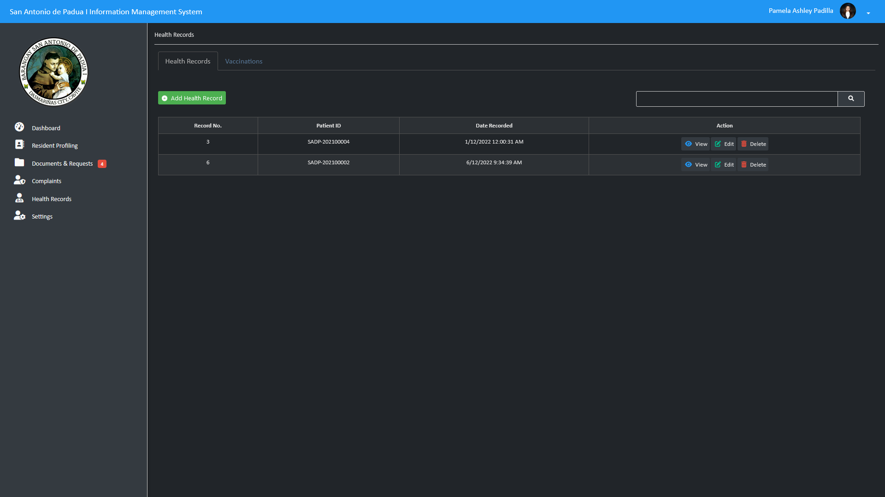
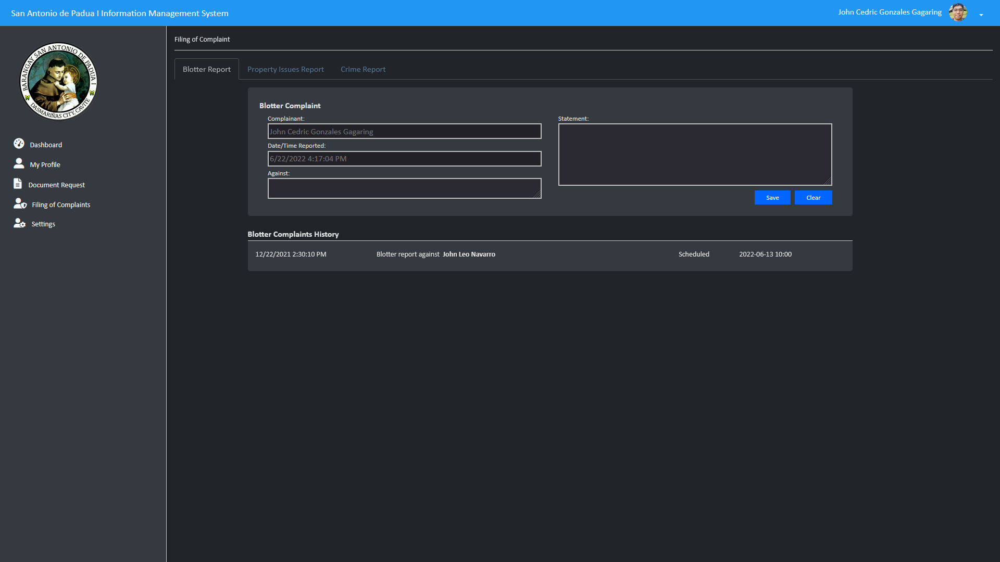
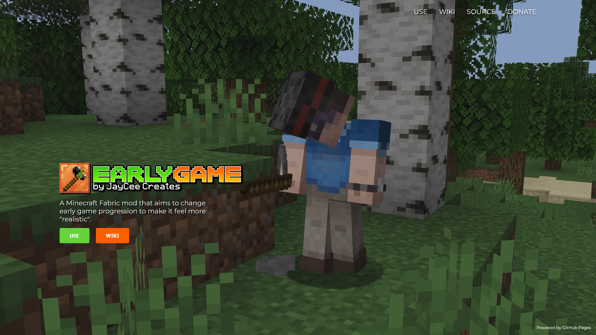

Whether academic or personal, here are the things I've worked on.
BRGY. SAN ANTONIO DE PADUA I INFORMATION MANAGEMENT SYSTEM
I've worked on a web-based information management system which automates processes like printing essential documents, managing blotter and property issue cases, and examining health records. Designed to be used for barangays in the Philippines, this web application allows residents to easily manage day-to-day transactions and improve the quality of life in the barangay without having to deal with going to the offices back and forth.

The login screen of the web app



EARLYGAME
This is an effort to overhaul the early game progression in the popular game Minecraft by changing how the game's mechanics work, from cutting trees to crafting tools, to bringing new blocks and items to the game. This open source project has an aim to make the Minecraft gameplay feel more believable without completely changing the overall base experience. I've been working on this mod for well over a year now, and it's still updating.

The homepage of a dedicated website


Whether academic or personal, here are the things I've worked on.
BRGY. SAN ANTONIO DE PADUA I INFORMATION MANAGEMENT SYSTEM
I've worked on a web-based information management system which automates processes like printing essential documents, managing blotter and property issue cases, and examining health records. Designed to be used for barangays in the Philippines, this web application allows residents to easily manage day-to-day transactions and improve the quality of life in the barangay without having to deal with going to the offices back and forth.
EARLYGAME
This is an effort to overhaul the early game progression in the popular game Minecraft by changing how the game's mechanics work, from cutting trees to crafting tools, to bringing new blocks and items to the game. This open source project has an aim to make the Minecraft gameplay feel more believable without completely changing the overall base experience. I've been working on this mod for well over a year now, and it's still updating.